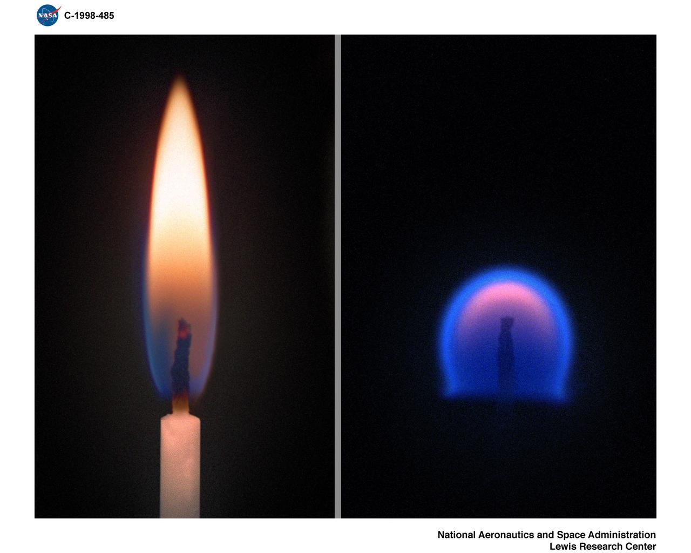

FIRENEX
Explore the science. Understand the evidence. Discover the gaps.
An evidence-grounded research explorer over 2,012 real NASA PSI records from 19 investigations. Where NASA never tested, FIRENEX says so — it never guesses.
Read the limitations & evidence boundaries →
Limitations — stated plainly
- Only 546 of 2,012 records record an outcome; coverage is not the same as an outcome.
- The Safe Predictor’s holdout accuracy is 0.745 versus a 0.673 majority baseline — a modest margin of about 4 tests in 55.
- PSI-117 is model/proceedings data, not ISS flight-test rows.
Understanding Fire Safety Beyond Earth.
From the International Space Station to deep-space missions, fire safety in space requires evidence, not assumptions. This dashboard exists for the engineers choosing materials for 34%-oxygen Artemis-era lunar cabins — and the crews who will live inside them.
The highest oxygen level solid materials were ever tested at in the PSI backbone ( solid-fuel rows with a recorded O₂ level). The Moon cabin is planned around NASA's recommended exploration atmosphere — 34% O₂ / 8.2 psia — an evidence gap no test covers.
How much the ISS smoke detector moved for Kapton and Teflon smoke (median obscuration drop) — versus 0.30 V for Silicone. In of analysed SAME-R tests the detector showed no response at all.
Peak smoke concentration in microgravity vs on Earth (PSI-115 modelling grids, 8 cm case). In space, smoke does not rise and dilute — it hangs as a dense, distributed cloud.
⬜ NO TEST DATA — PMMA at 34% O₂ (the Moon cabin)
PMMA — the acrylic in windows, panels and light covers — has real test rows in the backbone, tested up to % O₂. At the recommended exploration atmosphere for lunar habitats (34% O₂ / 8.2 psia), the number of matching test rows is . FIRENEX means the tool stops there — it will not guess what PMMA does in an atmosphere it was never tested in.
Two SAME-R numbers, kept distinct on purpose: 68,699 readings were downloaded across 44 telemetry files; 63,397 samples fall inside the 45 tests with raw files (the rest are idle rows between tests, plus repeated file headers). The Detection Panel's analysis uses the 63,397.
From the archive itself — the first five records
The Open Archive is not a summary: it is every record, exactly as recorded. These are its first five rows, rendered from the same data file the archive itself uses:
…and more records — open the full archive.
One tool, three jobs
🛡️ Prevention
Cabin Check — has NASA tested this material under these cabin conditions? Answered from matched real test rows, with the rows shown.
Inventory Screener — paste a whole cabin material list, get one traffic-light risk table per atmosphere.
👁️ Detection
How smoke actually behaves in microgravity, and what the space station's own smoke detector really saw — including the smokes it barely sees at all.
🧯 Suppression
What actually put flames out in the tests — evidence matched from real extinction records, plus a predictor that refuses to answer outside tested data.

Three gaps that stack
At lunar oxygen, fires spread faster (PSI-108 report: flame spread ≈6× faster from 35% O₂ / 1 atm → 50% O₂ / 2 atm) — and cabin solids have never been tested there (22.2% O₂ ceiling in the PSI data used here) — and the station detector barely sees two of the commonest cabin smokes (0.001 V median response for Kapton and Teflon). Each gap is survivable alone; together they are the lunar fire problem.
What the evidence shows — three findings
- The evidence does not cover clearing a cabin solid for 34% O₂ — no test in this database reaches it. The honest answer for PMMA at lunar conditions today is NO TEST DATA.
- One obscuration channel alone does not cover detection. Kapton and Teflon smoke barely register on it — in the station's own telemetry it missed them almost entirely, while scatter and ion channels saw what it missed.
- NASA's guide records that a suppressant jet can entrain air and sustain a flame, so the evidence does not support relying on a jet alone (the finding comes from BASS testing) — suppression planning starts from the extinction evidence, not from a single device.
Why this matters — it has already happened
A spark in a pure-oxygen cabin
During a launch-pad test, a fire swept the Apollo 1 capsule — filled with pure oxygen — and killed all three astronauts. It is the founding lesson of spacecraft fire safety: in an oxygen-rich cabin, materials burn far more readily than on Earth.
An explosion in a sealed cabin — the margin lesson
Apollo 13's oxygen tank exploded; there was no fire — and that is the point. A damaged atmosphere system in a sealed cabin left the crew rationing air and power for four days: the same no-margin arithmetic that makes a cabin fire, when it does come, so unforgiving.
A real fire on a space station
An oxygen generator caught fire aboard the Mir station and burned for several minutes while the crew fought it with extinguishers. Proof that cabin fire in orbit is not theory — it has happened, and the crew had to suppress it by hand.


Built for the NASA Space Apps 2026 challenge Flame in Freefall. Data: NASA Physical Science Informatics (PSI). Method and full references in the References & Method section.
Every number on this page was recomputed from the source files in two independent audits. The sources and method behind every figure are documented in References & Method.
Mission Discovery
Pick a mission type. FIRENEX reveals the NASA investigations in the PSI data that bear on it — and whether their recorded test conditions actually overlap the mission atmosphere.
Research Library
All 19 NASA PSI combustion investigations in the data, filterable by what was actually recorded. Blank means “not recorded”, never zero.
Compare Experiments
Pick 2–3 investigations. Only fields that were actually recorded are compared; where studies cannot be compared fairly, FIRENEX says why.
Evidence Gap Radar
Where the PSI test records cluster — and where they do not. Counts are numbers of recorded test rows, not safety scores. An empty cell means “no rows in this data”, not “safe” or “unsafe”.
Evidence-to-Decision cards
Traceable evidence summaries — not safety recommendations.
What the project can and cannot say
Ask Flame
An evidence search over FIRENEX’s own NASA-derived data and its claims table. It is not a generative AI: it retrieves, cites and abstains. If nothing in the sources matches, it says so.
Cabin Check Prevention
Pick a material and a cabin atmosphere. The verdict comes only from real PSI test rows for that material at matching conditions — and the rows are shown. If nothing matches, the answer is NO TEST DATA, never a guess.
The evidence map — where NASA's testing stops
Every non-design backbone record with a recorded O₂ level, counted by fuel family and oxygen band ( records). The empty right-hand columns for solids are the lunar problem in one picture: the Moon cabin (34%) and the spacesuit (100%) sit in bands where solid materials were essentially never tested.
Conditions actually tested — O₂ × pressure
Each dot is one real record with both values recorded ( records), coloured by family. Note the honest gap behind this chart: only backbone records record both O₂ and airflow, so the condition scatter uses O₂ × pressure, the pair the archive actually supports.
Loading chart data…
Inventory Screener Prevention
Paste a cabin inventory — one material per line — and get one traffic-light verdict per atmosphere. Names must match materials in the PSI backbone (try: PMMA, SIBAL fabric, Nomex, Kapton, Teflon, Silicone, Pyrell, Lampwick, Wax candle, Methanol, Heptane, Ethylene, Propane).
Detection Panel Detection
Two independent data sources point the same way: in microgravity, smoke does not rise and clear — and the detector flying on the ISS barely responds to some of the most common cabin materials' smoke.
First, guess: which smoke does the detector miss?
Five materials were burned in front of the station's detector aboard the ISS. Pick the one you think its obscuration beam responded to least — then see the measured answer.
Watch the detector miss it — SAME-R telemetry replay
These are the actual recorded voltages from the ISS detector, one sample per second, replayed — not an animation of what we think happened. Kapton test 62 is the lesson: smoke is generated from elapsed 200 s, the obscuration beam barely moves… while the scatter and ion channels do. (This is a replay of raw SAME-R HKP telemetry; it makes no claim to be the first of its kind — it is simply the station's own recording, played back.)
Loading detector replay…
What the ISS smoke detector actually saw — SAME-R (PSI-101)
Median drop of the station's obscuration detector when each material's smoke was generated (baseline ≈ 3.44 V; bigger drop = detector saw more smoke). Computed from 63,397 raw telemetry samples across the 45 tests with raw files.
Which channel should watch which smoke? — detector pairing
Per material, the median response of each of the detector's three channels across its tests (same smoke-window method as above). The pairing rule falls straight out of the numbers:
When does each sense wake up? — time to first response
For every test, the first second each channel's signal measurably leaves its baseline after smoke generation starts. A channel that never moves plots as no response in window — a result, not missing data. Silicone test 66: all three channels wake within ~1 minute. Kapton test 62: the channels move at ~55 s — yet their smoke-window medians stay near zero, which is why the median chart above reads “miss” while the wake-up chart reads “late and weak”.
Every test, not just the median — response distribution
All 45 real per-test obscuration drops (square-root spacing, exact values on hover). The median hides the spread: Silicone ranges from nearly nothing to 0.92 V depending on the test. ◆ marks the 8 STS-detector-configuration runs, which are flagged in the source analysis.
⚠️ The three-channel lesson
The obscuration beam is not the whole story. In Lampwick tests 80 and 82 the obscuration drop was only 0.06–0.08 V, yet the scatter channel slammed into its −6.25 V saturation rail (the signal's floor; smoke-window medians −5.23 and −5.55 V — read the rail as “detector saturated”, not a concentration). Kapton test 62: obscuration barely moved (0.03 V) while scatter read −1.67 V and the ion channel 0.23 V. A detection panel must show all channels, not one.
🔬 The NIST finding
NIST's spacecraft smoke-detection work with NASA found the same blind spot from the other side: the ISS photoelectric smoke detector responded poorly to Teflon and Kapton smoke — two materials all over a real cabin (wire insulation, films). Our count from the raw ISS data agrees: median response 0.001 V for both.
❄️ The flame you cannot see — PSI-117 cool flames
Some flames do not go out when they look out. In the PSI-117 cool-flame record, droplets kept vaporising under invisible cool flames after the visible flame died — a fire a crew cannot see and a camera cannot flag. The chart plots the recorded extinction diameter of the cool flame against pressure, from the 93-row tidy extraction of PSI-117 — 58 of those rows record a cool-flame diameter and are plotted; the other 35 record a burning rate or a hot-flame diameter instead. Model and experiment points are plotted separately and never merged — most of this dataset is CFD and conference-proceedings data, and it is labelled that way everywhere on this site.
Smoke in space vs on Earth — PSI-115 modelling grids
Same fire, two gravities. In microgravity the smoke covers fewer cells but concentrates: a dense, distributed cloud instead of a rising plume (peak ≈ 2× Earth in the 8 cm case).
The modelled smoke field itself
How big is space smoke? — particle-size distribution
The same model's particle-size distribution: recorded PSD value against the dataset's own node diameters. Earth and microgravity grow different smoke — one more reason a detector tuned on Earth smoke can look for the wrong signature.
Every analysed SAME-R test (45)
Flame Lab Detection
A simplified simulation of flame spread — the same ignition, the same fuel surface, run under two gravities at once. Nothing is hand-drawn: flame and smoke emerge from simple flow rules, the spread speed is set by two measured PSI-108 anchors, and the station detector reads against measured SAME-R medians.
🔥 Flame spread, simulated — Earth vs microgravity
A thin fuel surface runs along the bottom of each grid. It ignites in the middle and the burning front spreads outward at the rate set by the oxygen slider. Above the surface the two worlds part: on Earth a buoyant updraft stretches flame and smoke into a rising plume that disperses; in microgravity there is no bulk flow, so the flame stays round and the smoke accumulates around it instead of rising — the behaviour the PSI-115 modelling grids record (in microgravity smoke concentrates: peak ≈ 2× Earth's in the 8 cm case).
EXPERIMENTAL EVIDENCENASA measurements used here: flame-spread rates (PSI-108) · detector response levels (SAME-R) · test outcomes (FLEX)
SIMULATIONThe flame pictures are computed from those measurements — they are not recordings.
Ventilation on: moving air feeds both flames.
Smoke is simulated; the response levels are the measured SAME-R medians.
Suppression View Suppression
What actually put flames out — from the test record, not from opinion. The headline from the FLEX droplet tests at cabin conditions: at 21% O₂ / 14.7 psia, 63 of 78 matched real flames went out. The lookup below finds the evidence for your conditions.
Evidence-matched extinction lookup (FLEX droplet tests)
How often flames went out, by oxygen level (FLEX, PSI-69)
Share of tests ending in Extinction at each O₂ band. The pattern is the suppression story in one chart: the more oxygen, the harder a flame is to kill.
From evidence to action — the response sequence
Four steps a crew actually faces, each tied to a finding already shown on this site — no invented guidance:
Trust more than one channel: the obscuration beam alone missed Kapton and Teflon smoke (0.001 V medians) that scatter and ion channels registered. (Detection Panel)
Turning ventilation off does not starve the flame: NASA's Guide records steady fires persisting in quiescent microgravity, and a suppressant jet entraining air and sustaining the flame. (Researcher's Guide finding)
Work from the extinction evidence: at cabin conditions most matched FLEX flames went out (63 of 78); at high O₂, in these tests, most flames did not go out on their own. (Lookup above)
A flame that looks out may not be out: PSI-117 records invisible cool flames continuing after visible extinction. Keep watching the spot. (Cool-flame card, Detection)
One honest limitation, stated in full
The PSI tables record no diluent type or fraction for any of the 2,012 backbone records — so no honest “which suppression gas at what %” model exists in this data, and we did not build one. What the data does support is the matched-extinction evidence above. For solids, the BASS tables likewise record conditions but no suppression outcomes, so for solids we show coverage, not extinguishment claims.
💨 A suppressant jet alone is not enough
NASA's Researcher's Guide to ISS Combustion Science states a hard-won lesson from the BASS programme: local application of suppressant was not adequate to extinguish the flame — the jet entrains surrounding air and sustains the flame even with the ventilation turned off.
🧱 Solids: what BASS can and cannot say
The BASS / BASS-II tables ( rows: ) record the conditions solids were burned at — O₂ — but the PSI tables contain no suppression-outcome column. So for solids we show coverage, not extinguishment claims.
📈 Oxygen makes flame spread explode
In the SSCE thin-fuel tests (PSI-108), flame spread over a thin cellulosic fuel ran at 0.092 cm/s at 35% O₂ / 1 atm — and 0.547 cm/s at 50% O₂ / 2 atm, about 6× faster. Suppressing late in a high-O₂ cabin means chasing a much faster fire.
Safe Predictor Suppression · Model
A small decision tree, trained in Python on real FLEX droplet tests, that predicts whether a test flame went out — and refuses to answer outside the tested envelope. A model that guesses beyond its data is how you get dangerous wrong answers; this one abstains.
Validation, up front — before you run it
Trained on real FLEX rows. On a held-out 20% it never saw ( tests): accuracy vs for an “always say Extinction” baseline — modest, a ~7-point margin (about 4 tests in 55), and stated as such. The envelope gate abstained on holdout tests (expected: the holdout comes from inside the same envelope; the gate exists for inputs beyond it, like O₂ 60%).
Where it answers, where it refuses — the decision map
The exported tree evaluated over the whole O₂ × pressure plane. Green shades = predicts Extinction (darker = more of the leaf's training tests extinguished); red = predicts No-extinction; grey = refuses (outside the tested envelope). Most of this map is refusal — and that is the honest picture.
Loading predictor data…
Recorded burn times — how long FLEX droplets burned
Every PSI-69 row that recorded a burn time ( points), plotted against its test O₂. Shown as recorded — points and per-band medians, no fitted curve: burn time is what the table measured, not a model.
Honest validation — how well does it actually do?
Investigation Cards Explore
The whole backbone, one card per investigation — all 19 PSI investigations behind this dashboard, with their real row counts, tested ranges and DOIs. Tick Compare on any two or three cards to see them side by side.
One material, many investigations — the overlap view
materials were tested in two or more investigations; appear in exactly one. A material tested by several programmes (different facilities, different decades) carries cross-checks a single-study material cannot — and a material tested once carries all its risk in one table.
Open Archive Explore
The whole backbone, open: all 2,012 records behind every verdict on this site, browsable and filterable. If a number on this site cannot be traced to a row here or to the files in References, it should not be on this site.
The archive honesty meter
Only of records (%) record what actually happened — an outcome. The rest record conditions only. That single fact shapes this whole site: it is why verdicts are coverage-based, why the solids tools refuse to invent burn outcomes, and why the trained model exists only where outcomes exist (FLEX droplets).
References & Method
Everything this dashboard uses, where it came from, and the rules it follows. Prepared for the Space Apps submission attestation: all external resources are listed here.
The method — FIRENEX
FIRENEX: every answer comes from a real NASA test row — or the tool says NO TEST DATA. FIRENEX is the rule that every answer in FIRENEX is produced only from real NASA PSI test rows, matched at the conditions those rows were actually tested at. Where no test row matches — or a question falls outside the tested envelope — the tool returns NO TEST DATA, or the model abstains, instead of extrapolating, interpolating, or guessing.
Datasets (NASA Physical Science Informatics — PSI)
Plus: PSI-115 — SAME smoke modelling (DOI 10.60555/q0v5-1v28), 44 grid files / 9,446,715 values; PSI-117 — cool-flame CFD/proceedings (DOI 10.60555/gz0q-b577), 2,859 rows — model/proceedings data, labelled as such wherever used; PSI-108 — STDCE-1 / SSCE thin-fuel flame-spread report. PSI-60 and PSI-62 were checked and contain no data files (metadata only). The 2,012-record backbone is the public cleaned compilation of the PSI experimental tables listed above (SPICA project file, NASA Space Apps 2026), re-verified against direct PSI downloads — row counts reproduced for all 19 investigations (2,001 of 2,012 rows by count; the 11-row difference is expansions and filtered non-test rows — see the build report), drawn from 21 table files covering the 19 investigations; the backbone was kept as the more complete source).
Cabin scenario source: the Moon condition used across this site is NASA's recommended exploration atmosphere for lunar habitats — 8.2 psia, 34% O₂ (NTRS 20240003211, “Moon to Mars: Exploration Atmosphere” — the EA recommendation “was revised to 8.2 psia and 34% O₂” for lunar habitats).
Data downloads — take the numbers with you
The derived tables behind this site's analysis, released with the project (all underlying data is NASA PSI public data; these are the team's derived summaries, with method and caveats in the release README):
- samer_detection_by_test.csv — per-test SAME-R detector response (45 tests)
- samer_detection_by_material.csv — per-material detector medians (5 materials)
- samer_summary.csv — raw-file inventory of the 44 HKP telemetry files
- psi115_summary.csv — PSI-115 grid statistics (44 files)
- psi117_extinction_tidy.csv — PSI-117 tidy extinction table (93 rows; model/experiment flagged)
- coverage-verdicts.json — per-material coverage verdicts from the backbone
- PSI-101 experimental table (SAME-R) — the original PSI table, unmodified
- Dataset release README — sources, DOIs, method and caveats for every file above
The app's own JSON (backbone, detection, model, archive) lives in the project repository alongside the preparation scripts (prep_data.py, prep_final.py, train_model.py) that compute every number from the PSI source files.
The 10 official challenge resources
- PSI Data Repository — psi.nasa.gov/physci/repo/search?q=combustion
- Combustion Science overview (NASA Glenn) — nasa.gov/glenn/…/combustion-science
- ScienceCasts video “Studying Fire in Space” — youtube.com/watch?v=B9NnT4Xz5mU
- Researcher's Guide to ISS Combustion Science (PDF) — nasa.gov (recovered official URL; the challenge-page link is dead)
- Apollo 1 — sma.nasa.gov/sma-disciplines/accllp/apollo-1
- Apollo 13 — nasa.gov/history/apollo-13-the-successful-failure
- Mir fire — nasa.gov/history/25-years-ago-fire-aboard-space-station-mir
- Spinoff: Fireman's Air Tanks — spinoff.nasa.gov/node/9582
- Spinoff: Fire Detector — spinoff.nasa.gov/node/9407
- Spinoff: Fire Attire — spinoff.nasa.gov/node/9918
This research, back on Earth
NASA's own Spinoff programme documents where combustion and fire-safety research reached daily life — the same detector problem this dashboard analyses, carried into homes and fire stations:
- Fire Detector — spacecraft smoke-detection work carried into detectors that protect buildings on Earth. spinoff.nasa.gov/node/9407
- Fireman's Air Tanks — lightweight breathing-air technology from the space programme, carried into firefighting gear. spinoff.nasa.gov/node/9582
- Fire Attire — flame-resistant materials research carried into protective clothing. spinoff.nasa.gov/node/9918
Method — the honesty rules
- No extrapolation. Verdicts come from matched test rows; the predictor refuses outside its tested envelope. “No test data” is a first-class answer, not an error.
- Every number traces to a file. Counts, ranges and chart values are computed from the downloaded PSI files listed above — an audit of every displayed number is in the project build report.
- Coverage ≠ outcome. Most PSI tables record test conditions, not burn outcomes. Where a table has no outcome column (e.g. BASS solids), the app says so and shows coverage only.
- Data classes are labelled. Outputs carry a chip — TEST DATA measured test records · MODELLING CFD/modelling data (PSI-115, most of PSI-117) · REPORT findings quoted from named reports · MODEL output of the trained decision tree — so a reader always knows what kind of evidence they are looking at.
- PSI-117 is model/proceedings data (CFD + conference proceedings), never presented as ISS flight test rows; its model and experiment points are plotted separately and never merged.
- Detection caveats. SAME-R scatter −6.25 V is a saturation rail, not a concentration. “No detector response” means the median obscuration drop stayed under 0.005 V — effectively no response; the files hold no alarm threshold, so no alarm-failure claim is made. The 8 “STS det” configuration runs are flagged in the distribution view and excluded from the wake-up analysis.
- What we did not build, and why: a diluent/suppression-gas model — the PSI tables record no diluent type or fraction for any test, so any such model would be invented. The Suppression View is an evidence lookup instead.
Glossary — the plain words
- Obscuration — how much light the detector's beam loses in smoke (SAME-R reports it in volts; a bigger drop = the detector “saw” more).
- Saturation rail — the lowest value a sensor channel can report; hitting it means “at or beyond the limit”, not a size.
- Envelope — the range of conditions a model's training data actually covers; outside it, the model abstains.
- Holdout — data kept back during training, used only to test the finished model honestly.
- Day-aggregate row — a backbone row summarising one O₂ level for a day of testing, rather than a single test; the PSI tables' own structure.
- Design-range row — a row from a planned test matrix (PSI-68): conditions someone intended to test, not a test that ran. Excluded from every tool.
- Cool flame — a low-temperature flame that can persist invisibly after the visible flame dies (PSI-117).
- CFD — Computational Fluid Dynamics; simulation, not measurement. PSI-115 and much of PSI-117 are CFD data.
- Disruption — a FLEX outcome where the flame's burn was interrupted before completion; grouped with Completion as “No-extinction” in the predictor's target.
How this was built — and audited
FIRENEX was built by Team IGNIX with AI assistance, under the same rule the site applies to NASA's data: FIRENEX, applied to our own work. Before submission, the project ran a hostile self-audit: every displayed number was recomputed from the PSI source files (not from the app's own JSON), every external link was fetched, and every tool was pushed through edge cases — empty inputs, boundary values, impossible atmospheres. Three hostile self-audits found 26 defects and gaps between them (a truncated range, a miscounted sample total, NaN-input verdicts among them); every one was fixed and re-verified. The audits are documented in the project test report; a two-page summary is in the Evidence Brief. If a claim on this site cannot survive that treatment, it does not ship.
Tools & attestation
Built as a static web app (HTML/CSS/JavaScript) with the GSAP animation library (vendored locally — the page is fully correct with all CDNs blocked). Decision-tree model trained with scikit-learn in Python and exported to JSON for in-browser inference. AI assistance: Spark Open by Meta — used for data extraction, analysis code, model training. All results were verified against the NASA source data. (Declared here for the Space Apps original-work attestation.) All scientific data is NASA's, via the public PSI repository, cited per investigation above.